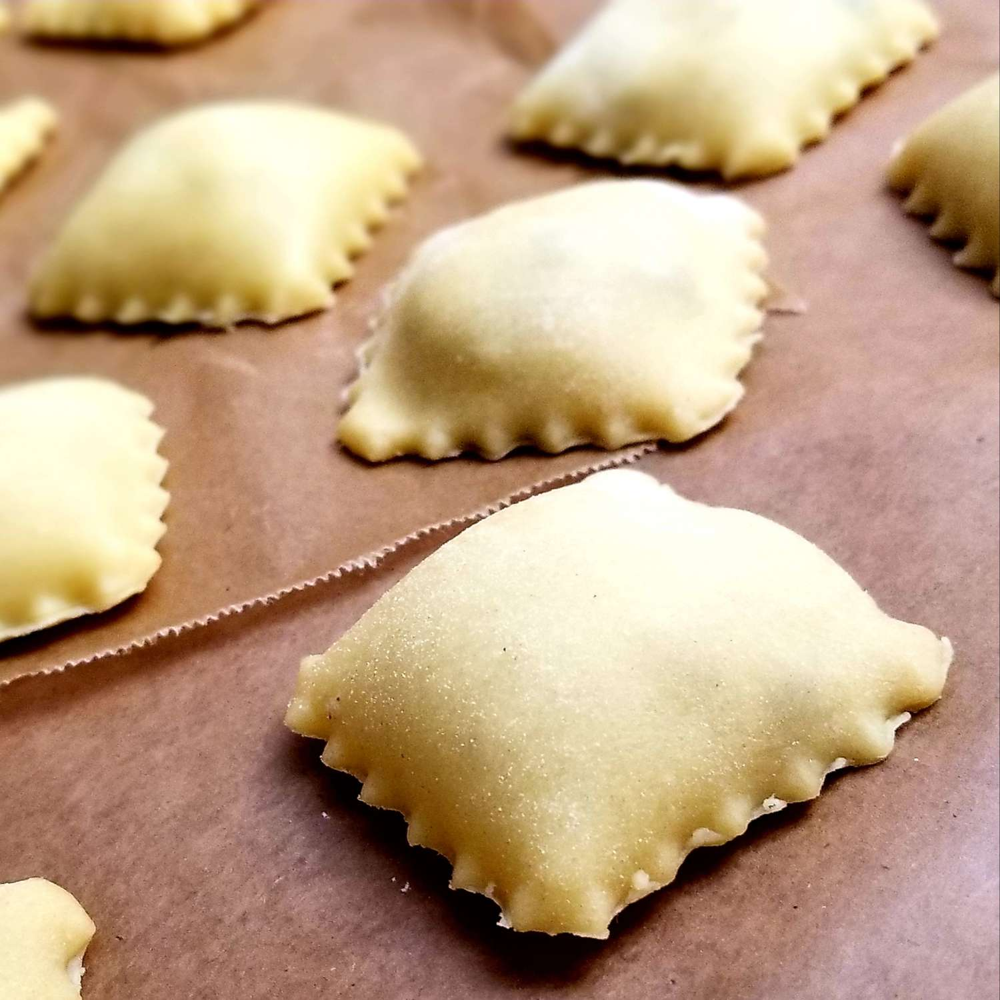

Four Chesee Ravioli

Description
This homemade ravioli recipe includes a pesto-Alfredo sauce and marinara. I wanted to recreate the ravioli dish that you get at Maggiano's Italian restaurant and it turned out great! Don't be intimidated by the large list of ingredients, it is well worth it.
Ingredients
- All-purporse flour
- Salt
- Eggs
- Water
- Olive Oil
- Ricotta
- Parmesan
- Mozzarella
- Provolone
- Dried Parsley
- Garlic
- Prepared Basil Pesto Sauce
- Heavy Cream
- Marinara Sauce
Steps
- Make the dough: Make and knead the dough, then form it into a ball. Tightly wrap the ball and refrigerate for at least 30 minutes.
- Make the filling: Mix the filling ingredients together and set aside.
- Make the sauce: Cook the garlic and pesto in oil, stir in the heavy cream, and bring to a boil. Reduce to a simmer, then whisk in the Parmesan.
- Assemble the ravioli: Roll out the dough into sheets. Drop cheese filling onto the dough about an inch apart. Cover with the top sheet of pasta and make a seal around each portion of filling. Cut out individual ravioli, then seal the edges.
- Cook and bake the ravioli: Boil the ravioli in salted water until the dumplings rise to the top and the filling is hot. Drain well.
- Serve the ravioli: Divide the ravioli between bowls, top with the warmed marinara sauce, then finish with the sauce.
Return Home